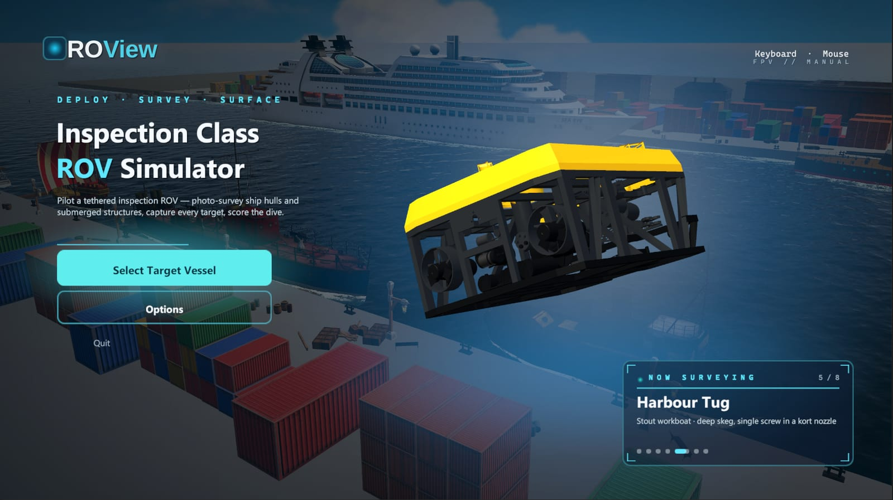
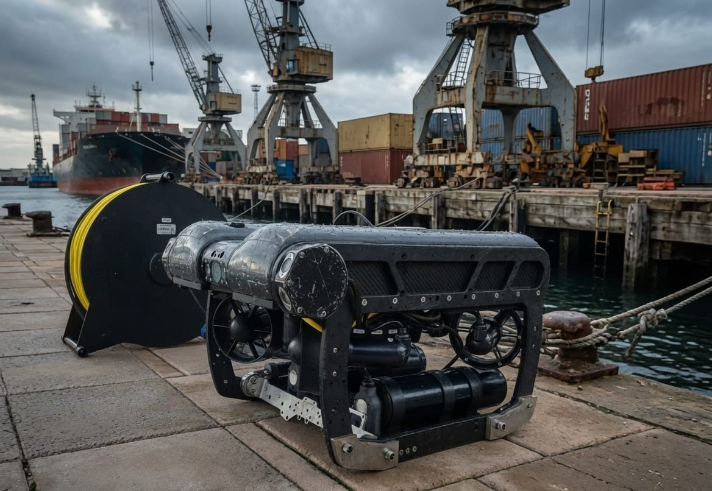
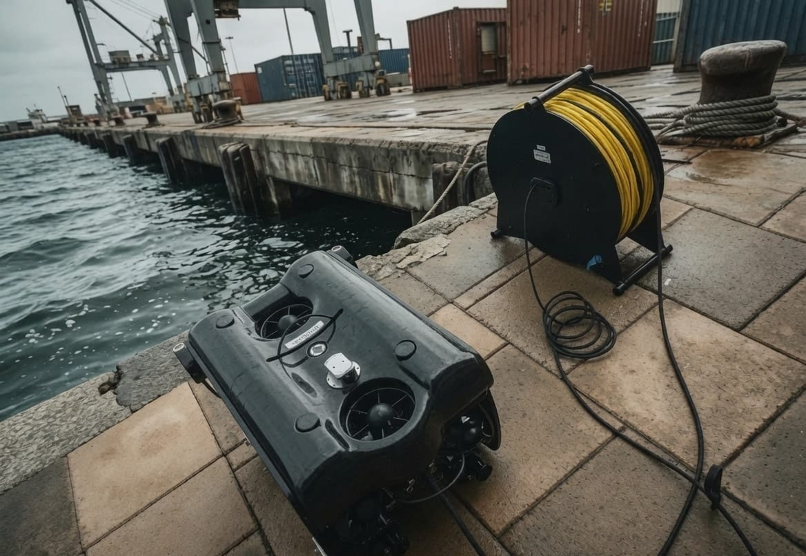
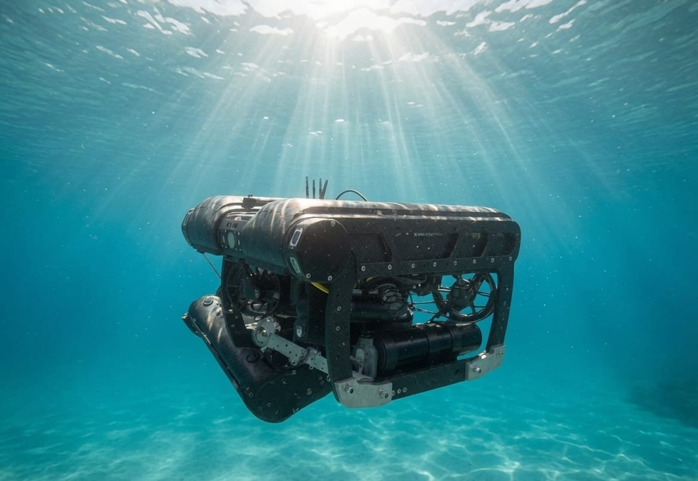
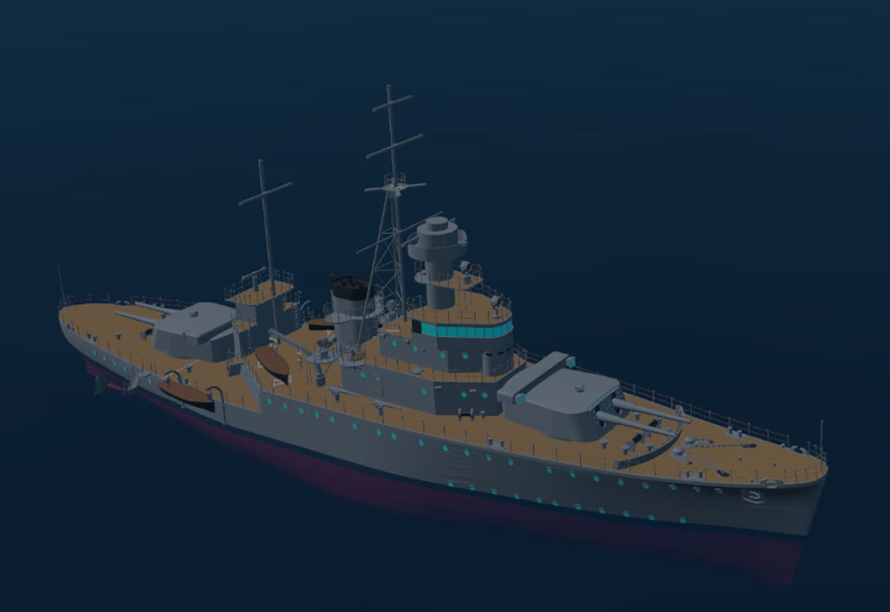
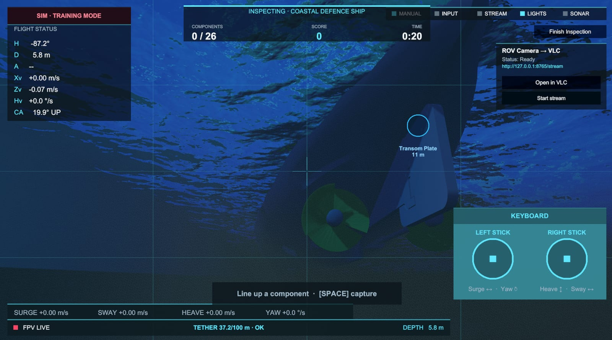
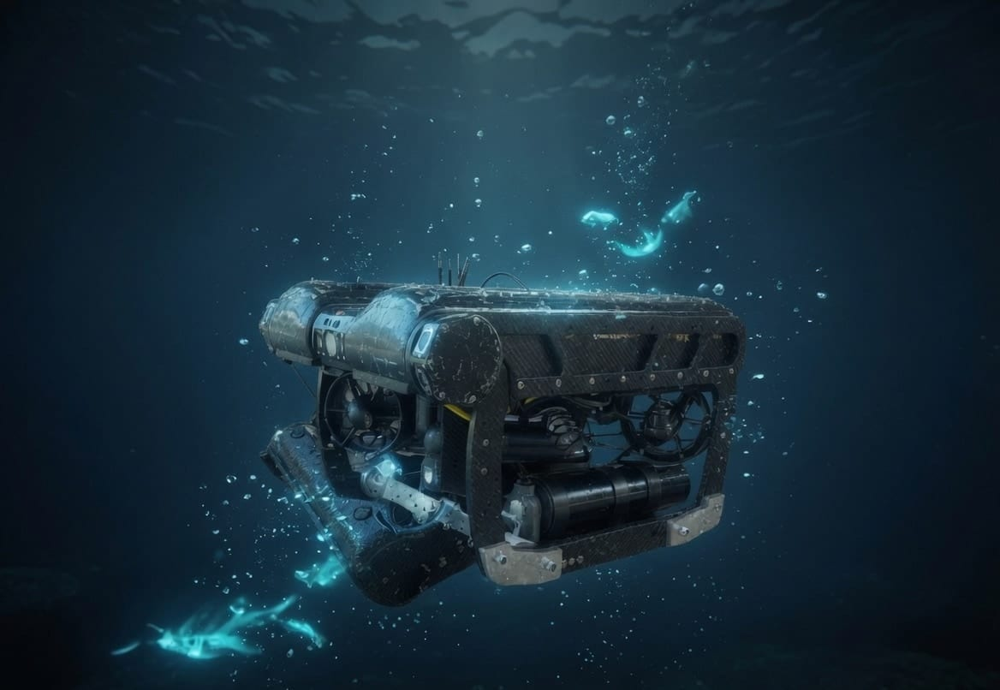
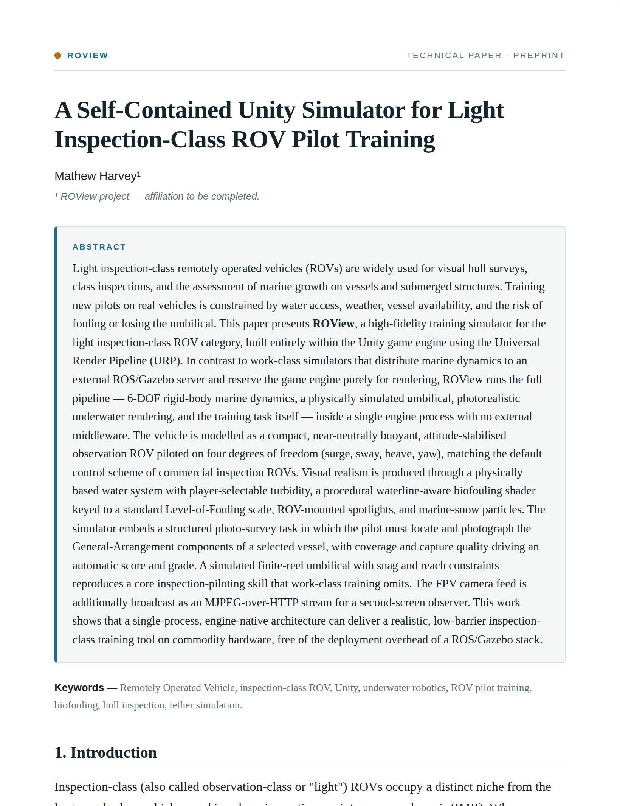

4-DOF piloting
Dual-stick control: surge and yaw on one axis pair, heave and sway on the other. The vehicle holds attitude, like typical inspection ROV defaults.
FPV // MANUAL LIGHT INSPECTION-CLASS ROV BUILT IN UNITY · URP
Inspection-Class

Actual in-engine title screen · work-in-progress build
Pilot a light-inspection ROV. Photo-survey ship hulls and submerged structures — find every target on the checklist, capture it cleanly, and score the dive.
In active development · first release free to play · coming 2026
The vehicle, topside
A compact light inspection-class ROV and its surface tether reel, staged on the wharf before a dive. Inspect-Me models this vehicle class: four-degree-of-freedom handling, finite-reel umbilical management, and the hull-survey workflow it's built for.


The vehicle
A compact, tethered light-inspection vehicle — four to six thrusters, forward lights and an FPV camera. Drag to orbit the hull you'll be flying.

Over the side
12m
Sunlight still reaches the work. Trim out, mind the tether, and start the survey.
The survey
Each mission drops you on a structure that needs inspecting. Fly the hull, find every General-Arrangement component on the checklist, and photograph it cleanly. Coverage and capture quality drive your score — just like a real survey report.
GA SHEET 01 · COASTAL DEFENCE SHIP — Tap a target to photograph it. 0 / 5 sampled

Choose your target
Eight vessels lie alongside in the harbour — from a 27-point ocean liner to a 13-point sail yacht. The number on each is how many General-Arrangement inspection points you'll photograph on that hull, and every hull is its own problem in trim, current, and confined space.
Large surface combatant — twin screws, deep draught.
Heavy gun vessel — broad beam, shallow draught.
Submerged pressure hull — sail, planes, shrouded screw.
Large passenger hull — bulbous bow, twin screws, deep draught.
Stout workboat — deep skeg, single screw in a kort nozzle.
Fast craft — planing hull, twin screws, shallow draught.
Timber hull — single screw, exposed shaft & rudder.
Fin-keel sailing hull — deep keel, single spade rudder.
Built for realism
Inspired by professional inspection workflows — not arcade flight. This is one live mission, straight from the build:

Dual-stick control: surge and yaw on one axis pair, heave and sway on the other. The vehicle holds attitude, like typical inspection ROV defaults.
Drag, buoyancy, and restoring forces modeled after marine vehicle dynamics — so momentum, drift, and station-keeping feel authentic.
Tilt the camera to scan hulls and confined spaces, with a clean overlay reading depth, heading, altitude, and body velocities.
Locate and capture every General-Arrangement component on the vessel. Coverage and capture quality drive your mission score.
Broadcast your FPV feed over HTTP as MJPEG — open it in VLC or a browser so observers watch on a separate display.
Bind surge, sway, heave, yaw, and camera tilt to any gamepad or keyboard. Swap devices mid-session with live detection.
Light inspection class
No brand names — just the vehicle class used worldwide for visual inspection in ports, dams, aquaculture, and industrial assets.
A dive, end to end
Work-in-progress footage from the current build — the loop you'll run on every mission.
Choose a vessel and read its brief — hull type, draught, and how many inspection points it carries.
Drop in from port, starboard, or stern — pick the launch point that gives you the cleanest run at the hull.
Fly the hull on the sticks, line up each component, and photograph it. Surface with the survey done.

Working depth
40m
Lights on, marine snow drifting. Just the pilot, the hull, and the engineering behind it.
The engineering
Inspect-Me is documented as a technical paper: the 6-DOF marine dynamics, the 4-DOF pilot model, the in-engine architecture, the procedural biofouling and the simulated finite-reel umbilical — written up in full, with the maths.

A high-fidelity training simulator for the light inspection-class ROV category, built entirely inside Unity with no external ROS/Gazebo middleware: rigid-body marine dynamics, a physically simulated umbilical, photorealistic underwater rendering and a scored photo-survey task, all in a single engine process on commodity hardware.
Launching soon
Inspect-Me is in active development and the first release will be free to play. Star or watch the project on GitHub to know the moment the build drops.
Planned for Windows · macOS · Web
FAQ
Inspect-Me is in active development. Star or watch the GitHub repo to get notified when the first public build drops.
The first release is free to play. The source is available on GitHub under a source-available license — free to use, but not to copy or redistribute. See the license in the repo.
No. Inspect-Me models the light inspection-class category — compact tethered vehicles with 4-DOF piloting and FPV workflows common across the industry. No brand names appear in the simulator.
Yes — the sim streams MJPEG over HTTP on a local port, so pilots and observers can use separate displays (open it in VLC or a browser), just like real operations.
A PC with a dedicated GPU is recommended. Keyboard, mouse, and gamepad/joystick support are built in, with full remappable bindings.
If you build ROVs and would like to discuss collaboration, we'd love to hear from you — reach out at mathewharvey@gmail.com.